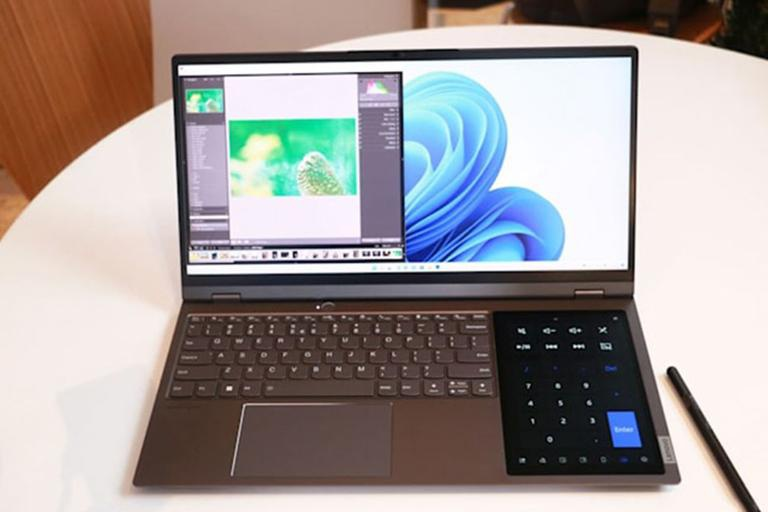
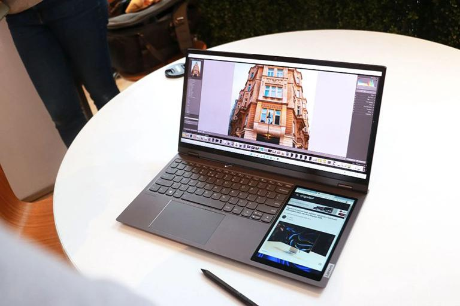

Đến với CES 2022, Lenovo đã giới thiệu mẫu laptop màn hình cảm ứng siêu rộng 21:10 đầu tiên trong ngành mang tên ThinkBook Plus (Gen 3), hỗ trợ màn hình cảm ứng phụ bên cạnh bàn phím.
Theo Engadget, màn hình chính của ThinkBook Plus thế hệ thứ 3 có kích thước 17,3 inch, trong khi màn hình cảm ứng phụ có kích thước 8 inch đặt ở bên cạnh bàn phím. Phần màn hình 17,3 inch có tỷ lệ khung hình 21:10 cho độ phân giải 3.072 x 1.440 (3K), tốc độ làm mới 120 Hz, độ sáng 400 nit, 100% gam màu DCI-P3, chức năng cảm ứng và Dolby Vision. Màn hình này cũng đạt chứng nhận TÜV Rheinland cho ánh sáng xanh dương yếu.

rong khi đó, màn hình cảm ứng LCD 8 inch phụ đi kèm với bút tích hợp để viết lên đó. Nó bao gồm các thư viện kỹ thuật số Pantone và ColorKing Plus. Màn hình được bao phủ bởi kính và có độ phân giải 800 x 1.280. Nó có thể được sử dụng như một bảng vẽ, notepad, launcher, máy tính... Lenovo đã cố gắng biến nó trở thành một phần quan trọng của ThinkBook Plus bằng việc thêm chức năng phản chiếu màn hình. Màn hình phụ được lắp bên cạnh bàn phím (ở phía bên phải); phần còn lại của bàn phím và nơi nghỉ tay có kích thước thu nhỏ tương đương bàn phím laptop 14 inch.
Mẫu laptop mới của Lenovo nặng khoảng 2 kg và mỏng 17,9 mm - những con số khá ấn tượng cho một thiết bị đi kèm hai màn hình. ThinkBook Plus được làm bằng nhôm và có màu xám. Sản phẩm đạt độ bền theo tiêu chuẩn chứng nhận MIL-STD 810H.
ThinkBook Plus trang bị CPU Intel Core H-series thế hệ thứ 12, RAM LPDDR5 lên đến 32 GB và không gian lưu trữ SSD M.2 PCIe 4.0 2 TB. Không có tùy chọn GPU chuyên dụng, nhưng nó đi kèm với đồ họa Intel Iris Xe tích hợp với kiến trúc bộ nhớ thống nhất (UMA). Sản phẩm đi kèm pin 69 Wh được Lenovo hứa hẹn cho thời gian sử dụng 1 ngày làm việc.
Sản phẩm tích hợp loa kép 2W hỗ trợ âm thanh Dolby Atmos cho chất lượng tốt hơn. Trong khi đó, webcam Full HD ở mặt trước kết hợp camera IR nhằm hỗ trợ nhận dạng khuôn mặt. Người dùng được trang bị một màn trập webcam để tăng cường sự riêng tư, trong khi máy quét dấu vân tay tích hợp trong nút nguồn đóng vai trò như là một công cụ bảo mật nâng cao.
Tại CES 2022 Lenovo cũng công bố thế hệ thứ bảy (Gen 7) của dòng laptop Yoga 2-trong-1 của mình với Lenovo Yoga 9i - chiếc laptop 14 có thể xoay 360 độ, Yoga 7i - laptop siêu mỏng nhẹ với 2 kích thước màn hình 16 inch và 13 inch, và Yoga 6 - laptop 13 inch làm từ các vật liệu tái chế thân thiện môi trường.